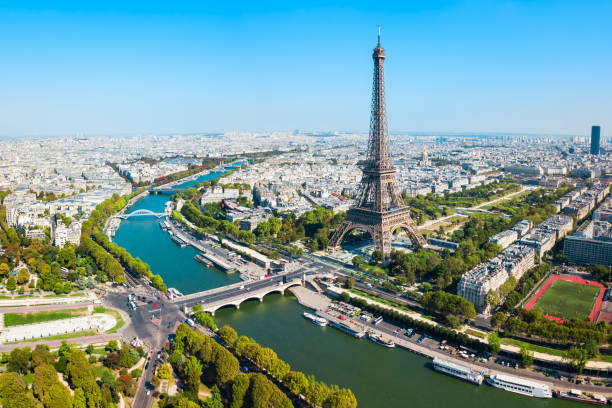
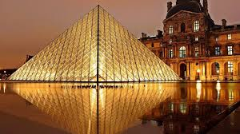
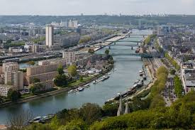

Прогулка по Парижу



Париж встретил меня теплым летним утром. Эйфелева башня, величественная и прекрасная, возвышалась над городом, словно приглашая исследовать его улицы.
Прогулка по Сене на закате стала одним из самых незабываемых моментов. Лувр с его стеклянной пирамидой поразил своей архитектурой и богатством коллекций.
Каждый уголок Парижа дышит историей и романтикой. Уютные кафе, ароматные круассаны и дружелюбные парижане сделали эту поездку по-настоящему особенной.
Рекомендации для посещения
- Эйфелева башня - обязательно поднимитесь на вершину на закате, виды невероятные!
- Лувр - приходите к открытию, чтобы избежать толп. Не пропустите Мону Лизу и Венеру Милосскую.
- Монмартр - прогуляйтесь по узким улочкам, посетите Сакре-Кёр и площадь художников.
- Круиз по Сене - лучший способ увидеть главные достопримечательности с воды.
- Латинский квартал - атмосферные кафе, книжные магазины и студенческая жизнь.